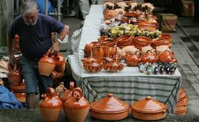
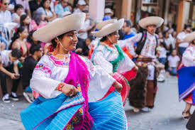
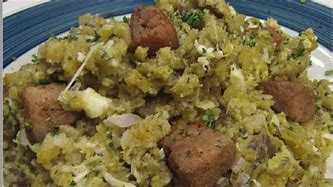

Artesanía y Arte Local
Los artesanos de Piñas son reconocidos por sus tejidos, cerámica y obras de madera. Cada pieza cuenta una historia única que refleja la riqueza cultural y las tradiciones de la región.
Música y Danzas Típicas
Los ritmos tradicionales de Piñas, como el pasillo y el albazo, son esenciales en las festividades locales. Las danzas representan mitos y leyendas de la región.
Gastronomía de Piñas
La comida de Piñas está profundamente influenciada por las costumbres andinas. Los platos típicos incluyen el seco de gallina criolla, tamales, y empanadas de viento.
